Delicious recipes made simple and easy to cook at home
About
A cookbook is a special book that brings the art of cooking to life. It holds a collection of recipes, tips, and secrets that turn ordinary meals into something extraordinary. More than just instructions, it inspires creativity, connects us to different cultures, and makes the kitchen a place of learning and joy.
Recipes
Chicken Fried Rice
Quick & tasty Indo-Chinese style fried rice with chicken and veggies.
Ingredients:
2 cups cooked rice
1 cup chicken (boiled & shredded)
1 cup mixed vegetables
2 tbsp soy sauce
1 tbsp oil
Procedure:
Heat oil in a pan, sauté vegetables.
Add chicken and soy sauce, stir well.
Add rice and mix properly.
Cook for 2 minutes and serve hot.
Watch Video:
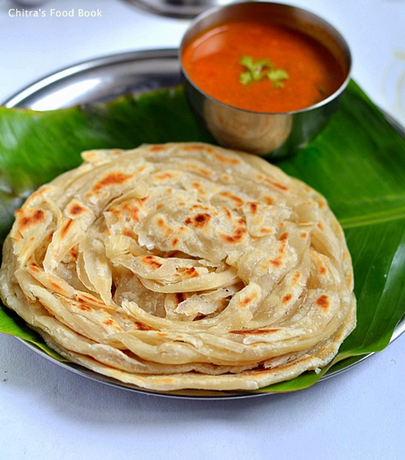
Kerala Parotta
Flaky, soft, and layered flatbread perfect with curry.
Ingredients:
2 cups all-purpose flour
1 tsp sugar
2 tbsp oil
Salt as needed
Water to knead
Procedure:
Knead flour, sugar, salt, oil, and water into a soft dough.
Rest the dough for 30 minutes.
Roll and fold to make layers, then cook on a hot pan.
Serve hot with curry.
Watch Video:
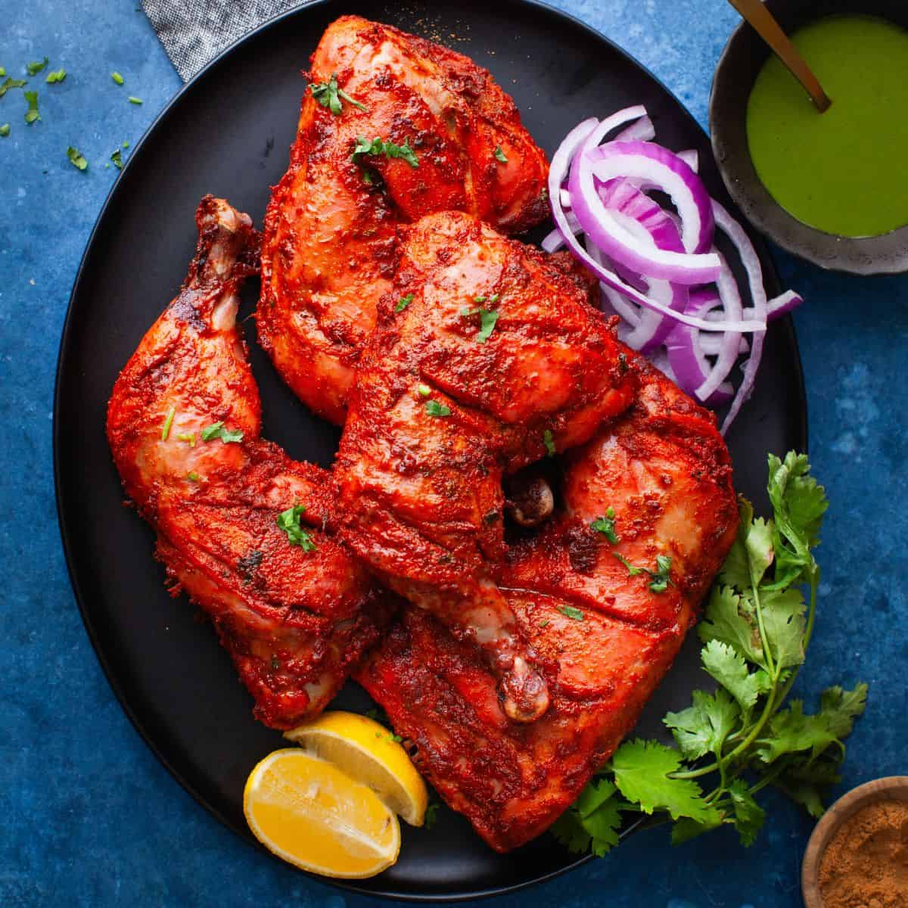
Tandoori Chicken
Juicy, smoky, and spiced chicken cooked in a traditional style.
Ingredients:
4 chicken legs
2 tbsp yogurt
1 tbsp lemon juice
2 tsp red chili powder
Salt to taste
Procedure:
Marinate chicken with yogurt, spices, and lemon juice.
Rest for at least 1 hour.
Grill or bake until cooked and smoky.
Serve with salad or naan.
Watch Video:
Prawn Biryani
Aromatic rice layered with spicy prawns and masala.
Ingredients:
2 cups basmati rice
250g prawns
2 onions & 2 tomatoes
2 tbsp biryani masala
Oil, ghee, spices
Procedure:
Marinate prawns with spices.
Cook rice separately.
Prepare masala with onions, tomatoes & prawns.
Layer rice and masala, cook on dum.
Watch Video:
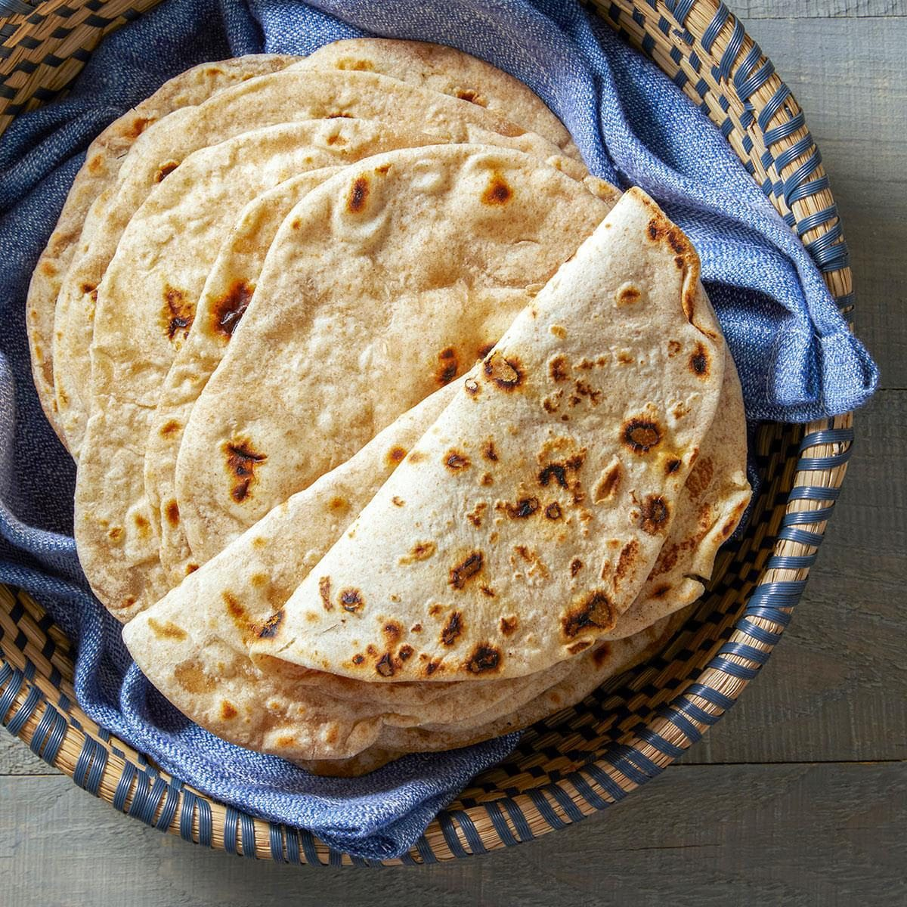
Chapathi
Soft Indian flatbread made from whole wheat flour.
Ingredients:
2 cups whole wheat flour
1 tsp salt
Water to knead
Procedure:
Knead flour, salt, and water into a dough.
Rest for 20 mins.
Roll into thin discs.
Cook on hot tawa until golden spots appear.
Watch Video:
Sambar Rice
South Indian one-pot rice with dal, tamarind, and veggies.
Ingredients:
1 cup rice & 1/2 cup toor dal
Tamarind extract
Sambar powder
Mixed vegetables
Procedure:
Cook rice and dal together.
Prepare tamarind-veggie-sambar base.
Mix with rice and simmer.
Watch Video:
Fish Curry
Spicy, tangy South Indian fish curry with tamarind.
Ingredients:
500g fish pieces
2 onions, 2 tomatoes
Tamarind extract
Spices and chili powder
Procedure:
Sauté onions and tomatoes with spices.
Add tamarind water and boil.
Add fish and cook until tender.
Watch Video:
Bubble Tea
Sweet milk tea with chewy tapioca pearls.
Ingredients:
1 cup black tea
1/2 cup milk
2 tbsp sugar
Tapioca pearls
Procedure:
Boil tapioca pearls until soft.
Brew tea, mix with milk and sugar.
Add pearls and serve chilled.
Watch Video:
Falooda
A refreshing layered dessert drink with basil seeds and ice cream.
Ingredients:
Falooda sev
Basil seeds
Rose syrup
Milk and ice cream
Procedure:
Soak basil seeds.
Cook sev and cool.
Layer glass with syrup, seeds, sev, milk & ice cream.
Watch Video:
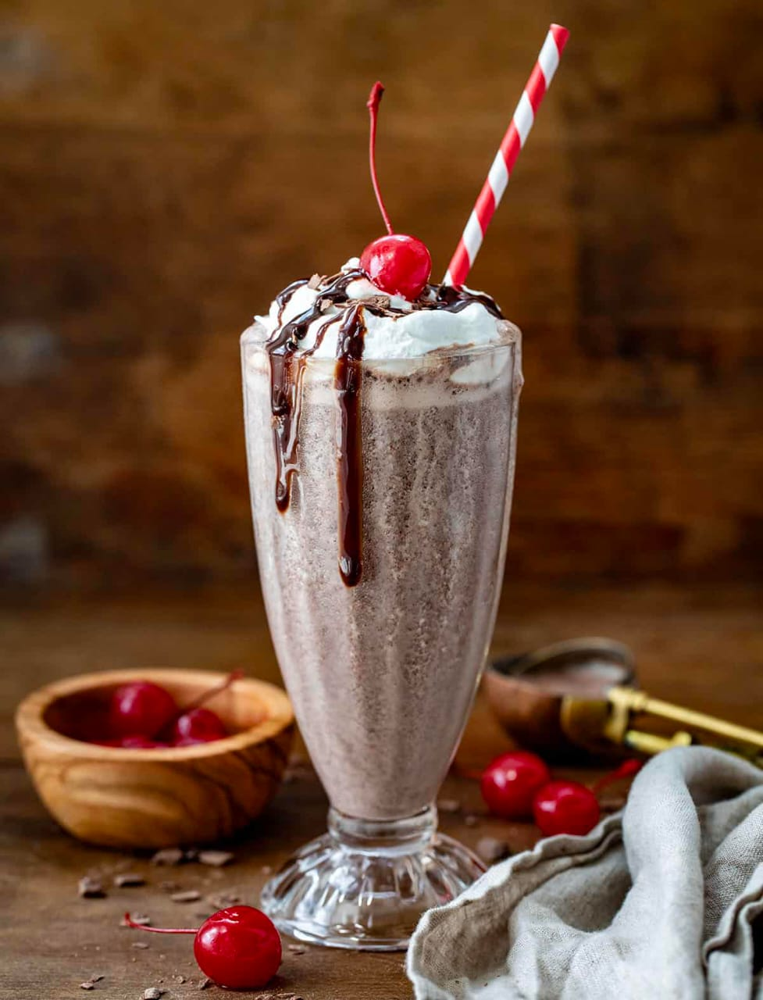
Chocolate Milkshake
Rich, creamy shake made with chocolate and milk.
Ingredients:
2 cups milk
3 tbsp cocoa powder
2 tbsp sugar
Ice cream (optional)
Procedure:
Blend milk, cocoa, and sugar until frothy.
Add ice cream for extra creaminess.
Serve chilled with chocolate syrup.
Watch Video:
Burger
Classic burger with patty, veggies, and sauces.
Ingredients:
2 burger buns
1 veg/chicken patty
Lettuce, tomato, onion
Cheese slice
Mayonnaise & ketchup
Procedure:
Grill or fry the patty.
Toast burger buns lightly.
Layer lettuce, patty, cheese, onion & tomato.
Add sauces and close with bun.
Watch Video:
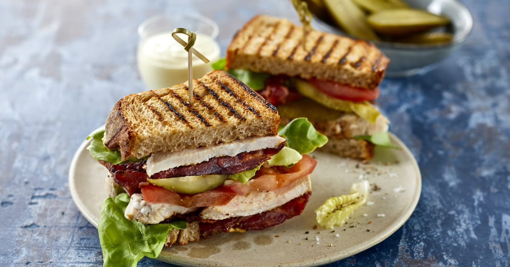
Sandwich
Simple and tasty grilled vegetable sandwich.
Ingredients:
4 bread slices
Butter
Onion, tomato, cucumber
Cheese slice
Green chutney
Procedure:
Apply butter and chutney on bread.
Layer veggies and cheese.
Cover with another slice and grill.
Serve hot with ketchup.
Watch Video:
Cheese Puri
Delicious puris stuffed with gooey cheese.
Ingredients:
2 cups wheat flour
1/2 cup grated cheese
1 tsp salt
Water for kneading
Oil for frying
Procedure:
Knead flour, salt, and water into a dough.
Roll small puris and stuff with cheese.
Seal edges and roll lightly.
Deep fry until golden brown.
Watch Video:
Curd Vadai
Soft urad dal vadas soaked in creamy yogurt.
Ingredients:
1 cup urad dal (soaked & ground)
2 cups thick curd
1 tsp green chili & ginger paste
Salt & spices
Coriander leaves
Procedure:
Make vada batter with urad dal.
Fry vadas until golden.
Soak in warm water, then transfer to beaten curd.
Garnish with coriander & serve chilled.
Watch Video:
Pista Milk
Creamy and delicious pistachio-flavored milk, perfect as a dessert drink.
Ingredients:
4 cups milk
10-12 pista (pistachios), chopped
2-3 tbsp sugar
1/4 tsp cardamom powder
A few saffron strands (optional)
Procedure:
Soak pistachios in warm milk for 30 minutes and blend into a smooth paste.
Boil milk, add pistachio paste, sugar, cardamom, and saffron.
Simmer for 5–7 minutes. Serve warm or chilled.
Watch Video:
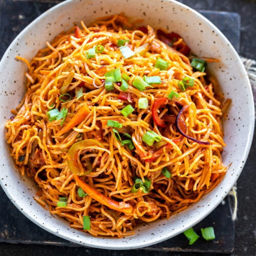
Schezwan Noodles
Spicy and flavorful Indo-Chinese noodles tossed in Schezwan sauce.
Ingredients:
2 cups boiled noodles
2 tbsp Schezwan sauce
1 cup mixed vegetables (capsicum, carrot, beans)
2 tbsp oil
Salt to taste
Procedure:
Heat oil in a pan, sauté vegetables on high flame.
Add Schezwan sauce and mix well.
Add boiled noodles and toss properly.
Cook for 2 minutes and serve hot.
Watch Video:
Masala Tea
Aromatic Indian tea brewed with spices and milk.
Ingredients:
2 cups water
1 cup milk
2 tsp tea leaves
1 tsp ginger (crushed)
2-3 cardamom pods
Sugar to taste
Procedure:
Boil water with ginger and cardamom.
Add tea leaves and let it simmer.
Pour in milk and sugar, boil for 2 mins.
Strain and serve hot.
Watch Video:
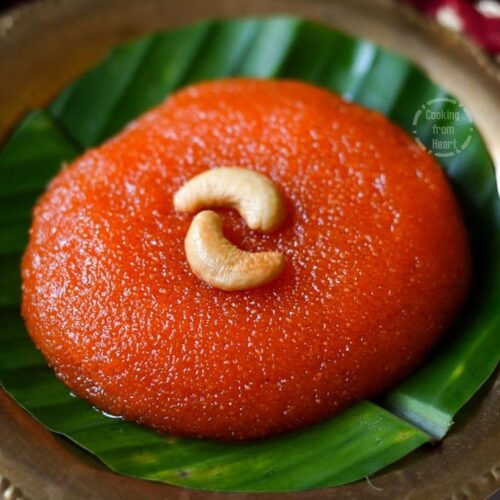
Kesar Halwa (Kesari)
Delicious South Indian sweet made with rava, ghee, and sugar.
Ingredients:
1 cup rava (semolina)
2 cups water
3/4 cup sugar
3 tbsp ghee
Cashews & raisins
A pinch of saffron or food color
Procedure:
Roast rava in ghee until aromatic.
Boil water with saffron, add sugar, stir well.
Add roasted rava slowly, mixing to avoid lumps.
Cook till thick, add cashews & raisins. Serve warm.
Watch Video:
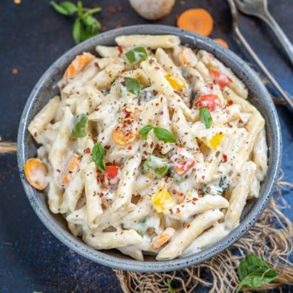
White Sauce Pasta
Rich and creamy pasta in a delicious white sauce with vegetables.
Ingredients:
200g pasta
2 tbsp butter
2 tbsp all-purpose flour
1 ½ cups milk
1 cup vegetables (carrot, capsicum, beans)
Salt & pepper to taste
1/4 tsp nutmeg powder (optional)
Grated cheese for topping
Procedure:
Cook pasta according to package instructions and keep aside.
Melt butter in a pan, add flour, and cook for 1-2 minutes.
Gradually add milk, stirring continuously to make a smooth sauce.
Add vegetables, salt, pepper, and nutmeg. Cook until veggies are tender.
Mix cooked pasta with the sauce. Top with grated cheese.
Watch Video:
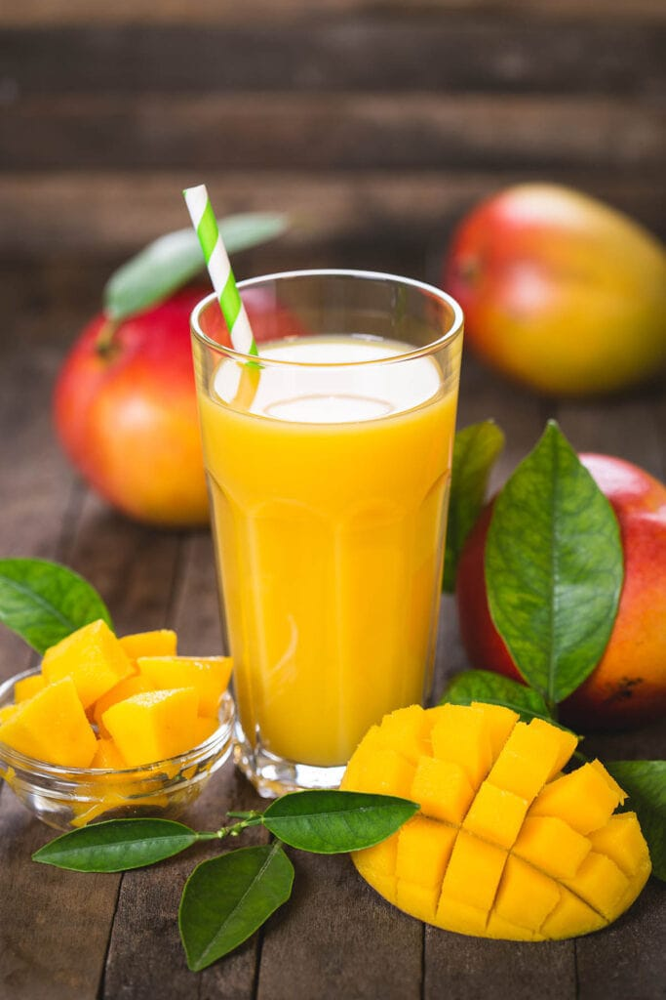
Mango Juice
Refreshing and naturally sweet mango juice, perfect for summer.
Ingredients:
2 ripe mangoes, peeled and chopped
2 cups cold water or milk
2-3 tsp sugar (optional)
Ice cubes (optional)
Procedure:
Blend mango pieces with water/milk and sugar until smooth.
Strain if desired, add ice cubes, and serve chilled.
Watch Video:
Chilli Chicken
Spicy, tangy, and flavorful Indo-Chinese style chicken dish.
Ingredients:
500g boneless chicken, cut into cubes
2 tbsp cornflour
2 tbsp all-purpose flour
1 egg
1 tbsp soy sauce
1 tbsp chili sauce
1 tbsp ginger-garlic paste
1 onion, chopped
1 capsicum, chopped
2-3 green chilies, slit
2-3 tbsp oil for frying
Salt to taste
Procedure:
Marinate chicken with soy sauce, chili sauce, ginger-garlic paste, cornflour, flour, egg, and salt for 30 minutes.
Heat oil in a pan and deep-fry the chicken pieces until golden brown. Drain excess oil.
In another pan, sauté onions, capsicum, and green chilies for 2-3 minutes.
Add fried chicken, extra chili sauce, soy sauce, and salt. Toss everything together for 2-3 minutes.
Serve hot as a starter or with fried rice/noodles.
Watch Video:
Cheesecake
Rich, creamy, and smooth cheesecake with a buttery biscuit base.
Ingredients:
200g digestive biscuits
100g butter, melted
300g cream cheese
200ml heavy cream
100g sugar
1 tsp vanilla extract
Optional: fruit topping or chocolate sauce
Procedure:
Crush biscuits and mix with melted butter. Press into a greased pan to form the base.
Beat cream cheese, sugar, and vanilla until smooth.
Whip heavy cream separately until stiff peaks form and fold into cream cheese mixture.
Pour the mixture over the biscuit base and smooth the top.
Refrigerate for 4-6 hours or until set.
Top with fruits or chocolate sauce before serving.
Watch Video:
Butterscotch Ice Cream
Creamy, rich, and crunchy butterscotch flavored ice cream.
Ingredients:
2 cups fresh cream
1 cup condensed milk
1/2 cup butterscotch nuts
1 tsp butterscotch essence
Caramel sauce (optional)
Procedure:
Whip the fresh cream until soft peaks form.
Add condensed milk and butterscotch essence, mix well.
Fold in crunchy butterscotch nuts.
Pour into a container, freeze 6–8 hours.
Drizzle caramel sauce before serving.
Watch Video:
Veg Salna
Flavorful South Indian vegetable curry served with parotta.
Ingredients:
1 cup mixed vegetables (carrot, beans, potato, peas)
2 onions (sliced)
2 tomatoes (chopped)
1/2 cup coconut paste
1 tsp garam masala
2 tsp chili powder
2 tbsp oil
Salt to taste
Procedure:
Heat oil, sauté onions and tomatoes until soft.
Add chili powder, garam masala, salt, and stir well.
Add vegetables and cook for 5 minutes.
Add coconut paste and enough water, simmer 10 minutes.
Serve hot with parotta or chapati.
Watch Video:
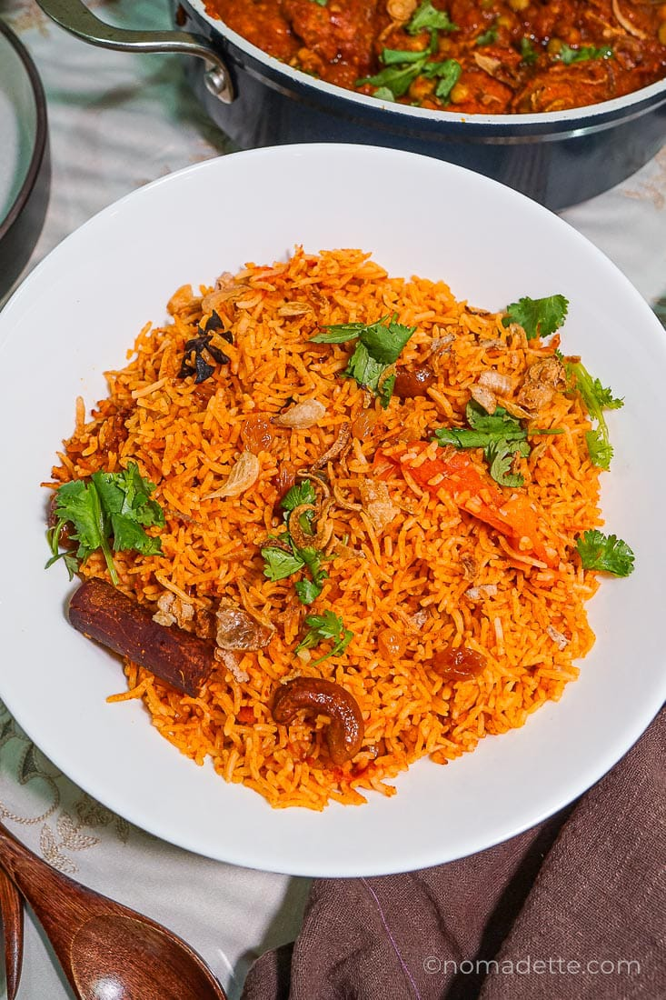
Tomato Rice
Flavorful South Indian rice cooked with tangy tomatoes and spices.
Ingredients:
2 cups cooked rice
3 medium tomatoes (chopped)
1 onion (sliced)
2 green chilies
1 tsp ginger garlic paste
1 tsp mustard seeds
1 tsp cumin seeds
1 tsp chili powder
1/2 tsp turmeric
1 tsp garam masala
Curry leaves
Salt as needed
Oil for cooking
Procedure:
Heat oil in a pan, add mustard, cumin, curry leaves, and green chilies.
Add onions and sauté until golden. Add ginger garlic paste and fry.
Stir in tomatoes, chili powder, turmeric, and salt. Cook until soft.
Mix in cooked rice and garam masala. Toss well to coat evenly.
Serve hot with papad or raita.
Watch Video:
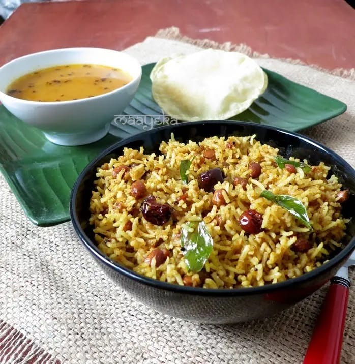
Puliyodarai
Tamarind-flavored rice, spiced and tempered the traditional South Indian way.
Ingredients:
2 cups cooked rice
1 lemon-sized tamarind ball
2 tbsp sesame oil
2 tbsp peanuts
1 tsp mustard seeds
1 tsp chana dal
1 tsp urad dal
2 dried red chilies
1/4 tsp asafoetida
Curry leaves
Salt to taste
Puliyodarai spice powder (optional, for extra flavor)
Procedure:
Soak tamarind in warm water and extract thick juice.
Heat oil, fry peanuts until golden, remove and set aside.
In the same oil, temper mustard, dals, chilies, curry leaves, and asafoetida.
Add tamarind extract, salt, and cook until thick.
Mix the tamarind paste into cooked rice and add fried peanuts.
Rest for 30 minutes before serving for best flavor.
Watch Video:
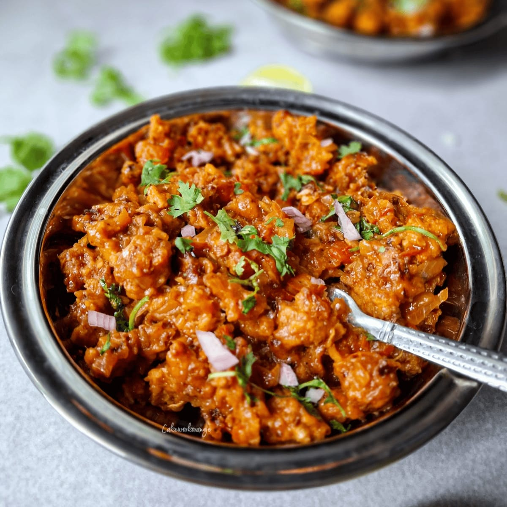
Kalan (Mushroom Curry)
A Kerala-style yogurt-based curry made with mushrooms and coconut.
Ingredients:
200g mushrooms (sliced)
1 cup yogurt (sour curd)
1/2 cup grated coconut
2 green chilies
1 tsp cumin seeds
1/2 tsp turmeric
Salt as needed
2 tsp coconut oil
1 tsp mustard seeds
Curry leaves
2 dried red chilies
Procedure:
Cook mushrooms with turmeric, salt, and little water until soft.
Grind coconut, cumin, and green chilies into a fine paste.
Add paste and yogurt to the mushrooms. Simmer gently (do not boil after yogurt is added).
Prepare tempering with coconut oil, mustard, red chilies, and curry leaves.
Pour over curry and serve with rice.
Watch Video:
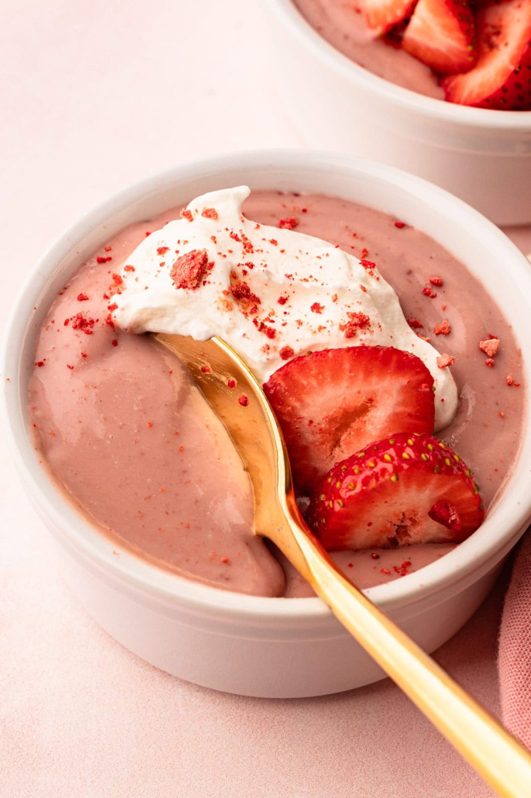
Strawberry Pudding
Light, creamy, and fruity strawberry pudding topped with fresh strawberries.
Ingredients:
2 cups milk
1/2 cup sugar
2 tbsp cornflour
1/2 cup strawberry puree
1 tsp vanilla essence
1/2 cup fresh cream
Chopped strawberries (for garnish)
Procedure:
Mix cornflour in 1/4 cup milk and keep aside.
Boil remaining milk with sugar, then stir in cornflour mixture.
Cook until thick, add vanilla and strawberry puree.
Cool slightly, fold in whipped cream.
Pour into bowls, refrigerate for 2-3 hours.
Garnish with fresh strawberries before serving.
Watch Video:
Red Velvet Cake
Moist, fluffy, and vibrant red cake layered with smooth cream cheese frosting.
Ingredients:
2 1/2 cups all-purpose flour
1 1/2 cups sugar
1 cup buttermilk
1/2 cup butter (softened)
2 eggs
2 tbsp cocoa powder
1 tsp baking soda
1 tsp vinegar
1 tsp vanilla extract
2 tbsp red food coloring
Cream cheese frosting (for layering and topping)
Procedure:
Preheat oven to 180°C (350°F). Grease and line cake tins.
Beat butter and sugar until creamy, then add eggs one at a time.
Mix cocoa, food color, and vanilla, add to batter.
Add flour and buttermilk alternately, mixing gently.
Combine baking soda with vinegar, fold into the batter.
Bake 30–35 mins, cool completely.
Layer with cream cheese frosting and decorate.
Watch Video:
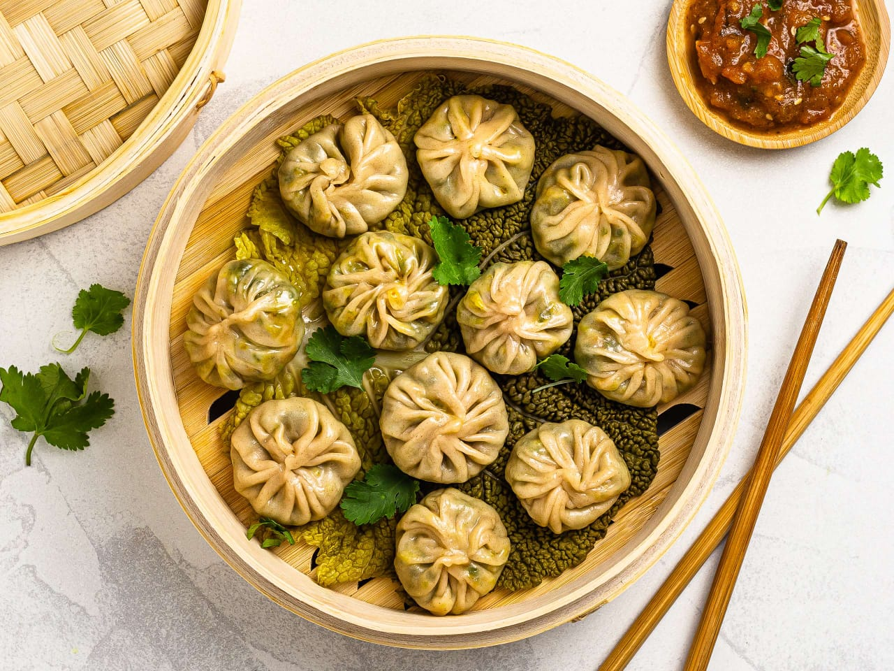
Momos
Steamed dumplings stuffed with flavorful vegetables or chicken, served with spicy chutney.
Ingredients:
2 cups all-purpose flour
1 cup finely chopped cabbage
1/2 cup grated carrot
1/2 cup chopped onion
2 garlic cloves (minced)
1 tsp ginger (grated)
1 tsp soy sauce
Salt & pepper to taste
1 tbsp oil
(Optional) 1 cup minced chicken for chicken momos
Procedure:
Knead flour with water and a pinch of salt to make a smooth dough. Rest 30 mins.
Heat oil, sauté garlic, ginger, onion, and veggies. Add soy sauce, salt, and pepper. Cook lightly.
Roll dough into small discs, place stuffing in the center, fold and pleat into dumplings.
Steam momos in a steamer for 10–12 minutes until soft and cooked.